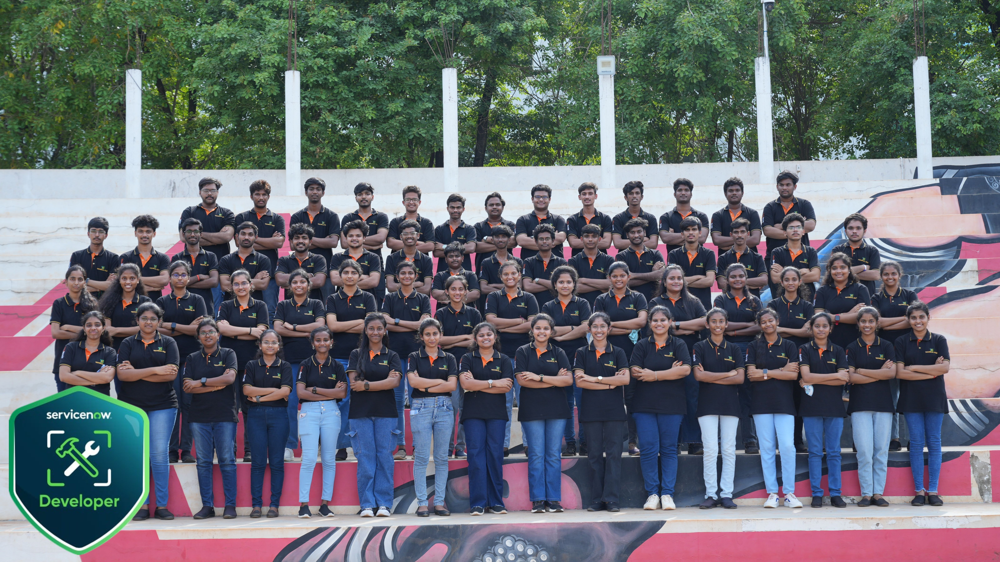

6. ServiceNow Training & Placement Support
Technical Hub provides ServiceNow training on the enterprise Now Platform, preparing students for cloud workflow administration, ITSM solutions, and certification examinations. The team also provides placement assistance to help students prepare for relevant career opportunities.
- ServiceNow architecture, lists, forms, data dictionary, tables, and schema relationships
- User administration, security rules, role-based access control (RBAC), and permissions
- Process automation with Flow Designer, Business Rules, Client Scripts, and ITSM solutions
- Preparation for ServiceNow Certified System Administrator (CSA) and Application Developer (CAD) certifications
- Placement assistance, including interview preparation and career guidance for ServiceNow roles
359ServiceNow certification
ServiceNow Training & Placement Outcome
Students build practical ServiceNow administration and application development skills, with support for certification preparation and placement readiness.
